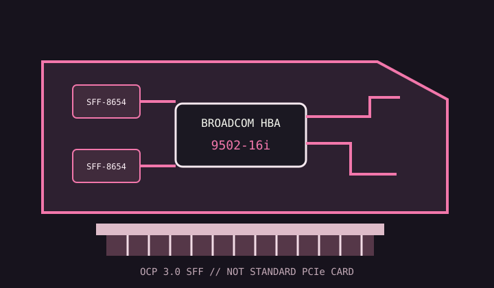

[ INDIVIDUAL COMPONENT // STORAGE / DISK I/O ]
Broadcom HBA 9502-16i
An OCP 3.0 SFF host bus adapter exposing sixteen internal Tri-Mode storage lanes; it is not a conventional bracketed PCIe card.

MODEL SCOPE: HBA 9502-16i. Confirm that the server has a compatible OCP 3.0 SFF slot and that the exact adapter SKU matches chassis and backplane wiring.
Reference specifications
| Controller / form factor | Broadcom Tri-Mode SAS controller; OCP 3.0 NIC Small Form Factor (SFF) adapter. |
|---|---|
| Host bus | PCI Express 4.0 x8 host interface via the OCP 3.0 connector. |
| Ports | Sixteen internal lanes using two SFF-8654 8i SlimSAS connectors. |
| Protocols | SAS 12 Gb/s, SATA 6 Gb/s and supported NVMe over PCIe Tri-Mode paths. |
| RAID / HBA mode | HBA/eHBA pass-through mode; no MegaRAID array creation or write-back cache is provided by this HBA model. |
| Cache / protection | No RAID write cache or BBU specified; storage policy and redundancy are host-side. |
| Firmware / OS | Use Broadcom 95xx HBA firmware and a driver supported for the installed Windows, Linux or hypervisor release. Verify OCP platform qualification and OEM firmware requirements. |
| Drive / backplane caveats | NVMe requires a supported direct-attach or tri-mode backplane mapping; SAS expanders do not route NVMe. Use only the correct SlimSAS cable pinout and OCP connector generation. |
Compatibility and service notes
- The OCP 3.0 SFF form factor and power/management pins are platform-specific; this is not a standard PCIe x8 slot card.
- Map each lane to a compatible backplane bay before enabling drives; SAS/SATA and NVMe may follow different physical paths.
- Keep the HBA in pass-through mode for host-managed filesystems and record firmware and drive identifiers.
Sources & further reading
- Broadcom — HBA 9502-16i Tri-Mode OCP 3.0 Storage AdapterOfficial exact-model product details and downloads.
- Broadcom — 95xx PCIe 4.0 MegaRAID and HBA Tri-Mode Storage Adapters User GuideOfficial HBA setup, firmware, cabling and compatibility guidance.
- Broadcom — 9500 Series PCIe Gen 4.0 Tri-Mode Storage HBA product briefManufacturer family brief covering the HBA series and supported adapter configurations.